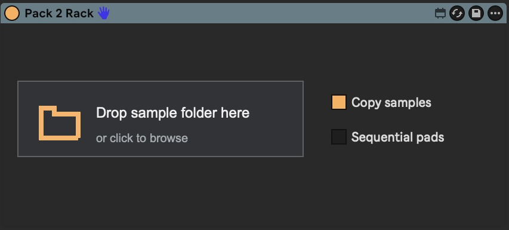
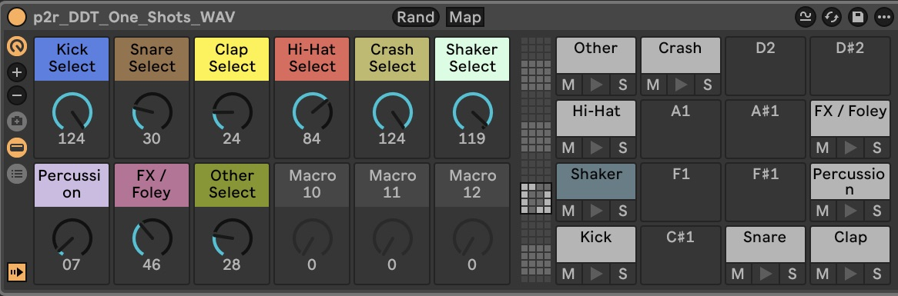
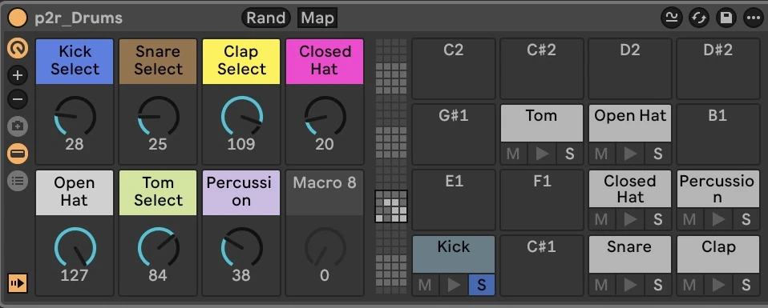

Make exploring sample packs easier—and a lot more fun.
Turn a folder of one-shots into a rack you can play, tweak, and explore. Hear your samples together, swap sounds as you go, and find combinations worth building a track around.

Less clicking through folders.
More hearing what works.
Exploring a sample pack can kill your momentum. Preview a kick, open another folder, audition a snare, try to imagine them together. It’s even harder when you’re working in a genre you don’t know as well.
You need to hear the sounds in context to know what fits.
- Drums / One-shots
- Kicks
- kick_01.wav
- kick_02.wav
- kick_03.wav
- Snares
- snare_01.wav
- snare_02.wav
- snare_03.wav
- Hi-hats
- hat_closed.wav
- hat_open.wav
- hat_03.wav
- Kicks
Your one-shots,
ready to mix and match.
Pack to Rack turns your one-shots folder into a neatly organized rack with sample selectors and saves the samples to your User Library.
Start a pattern, then swap kicks, snares, hats, and other sounds while it plays. Explore the pack by making music with it.

Roll the dice.
Keep what clicks.
Randomize the sample selection for a quick sketch or a fresh starting point. Keep the combinations you like, change the sounds that don’t fit, and follow the idea.

Runs locally.
No telemetry.
Pack to Rack reads the sample folder you choose and saves the rack and copied samples to your Ableton User Library. It doesn’t upload data or collect telemetry.
The code is open source. View the code on GitHub.
Like it?
Send a little crypto.
If Pack to Rack makes digging through your samples more fun, you can send something my way.
Wallet <wallet address>